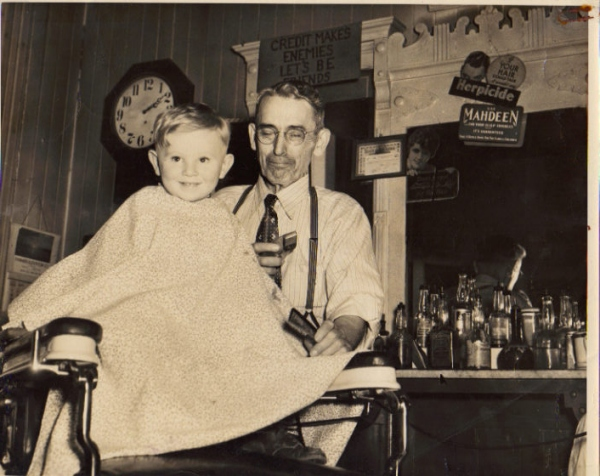
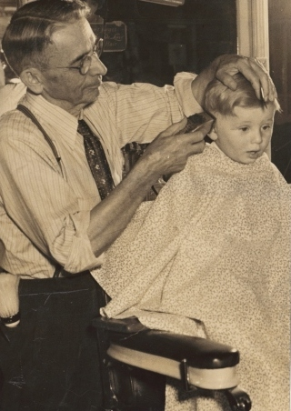
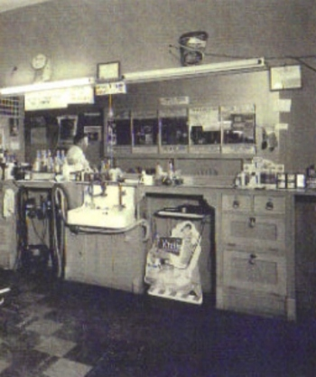
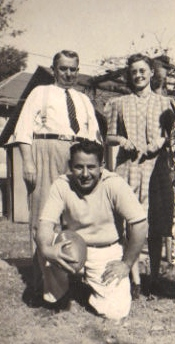
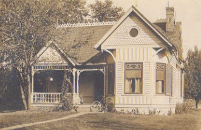

Joseph "Jodie" Cox (1876 - 1956) had a barbershop in Winfield for more than 50 years. His son, Waldo, became a barber and joined him. When Jodie retired in 1956, the shop passed to Waldo.

Jodie had two sons, Walker (the eldest) and Waldo. Above Jodie stands with Walker's wife, Pauline, and Waldo kneels with a football. The Cox home was at 403 South Locust Street.

If you have stories or anecdotes relating to the barbershop, please enter them in the Guestbook and I will add them to this page. Thank you.